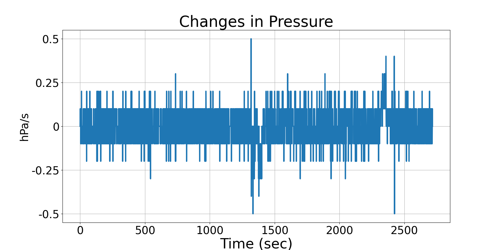
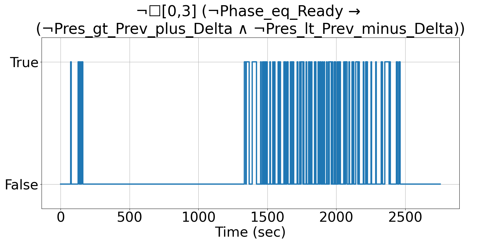
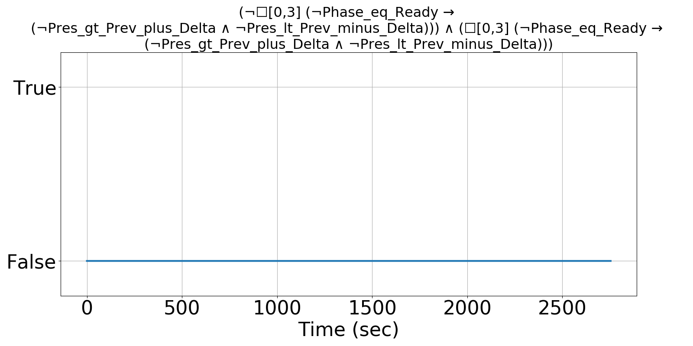

Integrating Runtime Verification into an
Automated UAS Traffic Management System
Matthew Cauwels, Abigail Hammer, Benjamin Hertz, Phillip H. Jones, Kristin Y. Rozier
This webpage contains supplementary specifications for "Integrating Runtime Verification into an
Automated UAS Traffic Management System" by M. Cauwels, A. Hammer, B. Hertz, P. H. Jones, and K. Y. Rozier
RC_UAS_7
Specification Description
There should be noise in the Pres measurement when Phase is not "Ready" such that the change is at a minimum PRES_DELTA_MIN, but if there is not, allow 3 timesteps to recover
Signals Required
Pres, Phase
Boolean Conversion of Signals to Atomic Inputs
Phase_eq_Ready: Phase == "Ready"
Pres_gt_Prev_plus_Delta: Pres > PREV_PRES + PRES_DELTA_MIN
Pres_lt_Prev_minus_Delta: Pres < PREV_PRES - PRES_DELTA_MINMLTL Specification
Original: ¬☐[0,3] {¬Phase_eq_Ready → (¬Pres_gt_Prev_plus_Delta ∧ ¬Pres_lt_Prev_minus_Delta) }
Updated:(¬☐[0,3] {¬Phase_eq_Ready → (¬Pres_gt_Prev_plus_Delta ∧ ¬Pres_lt_Prev_minus_Delta) }) ∧ (☐[0,3] {¬Phase_eq_Ready → (¬Pres_gt_Prev_plus_Delta ∧ ¬Pres_lt_Prev_minus_Delta) })
Fault Explanation
Pressure is changing too slowly
Additional Notes
PRES_DELTA_MIN can be made a small non-zero number to be conservative. If there isn't noise, there is an issue with the sensor
Figures


